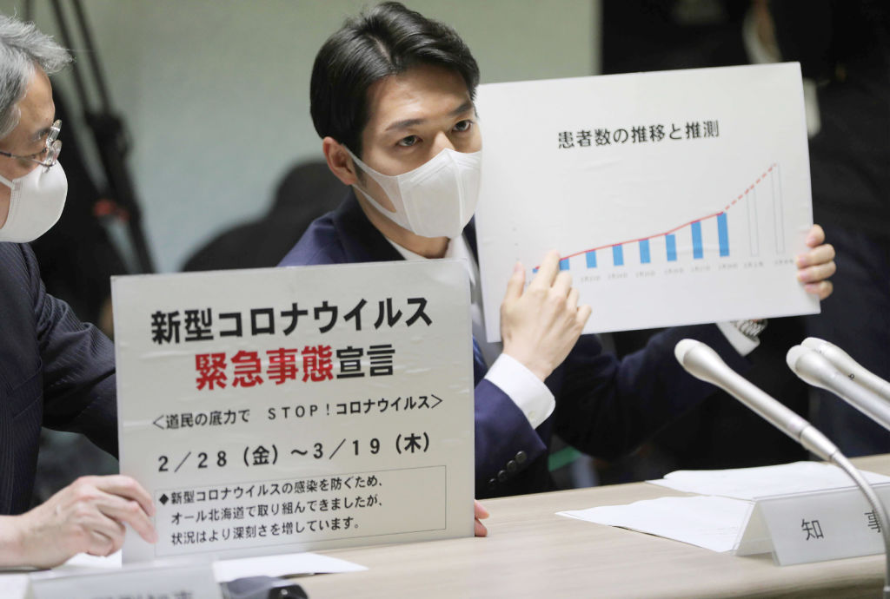
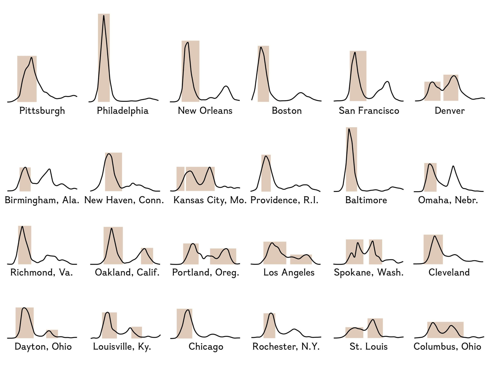

Why We Need To End Lockdowns (at least in most places)
See this excellent article for a summary, with links, as to why the lockdowns are showing up as ineffective.HT: Yih-Chau Chang on LinkedIn.
Reactions: anemone, topsquark and MarkFL
Posted On: 2020-05-04T00:00:00
Posted By: Ackbach
This is a danger zone thread haha.Personally I'm staying put with social distancing and limited interactions.There are many cases where cities have lifted lockdowns and now they see a second wave.It's all good until someone close to you gets put on a ventilator.Not going to risk myself, friends and family.
Reactions: topsquark, Klaas van Aarsen and Ackbach
Posted On: 2020-05-04T00:00:00
Posted By: Greg Bernhardt
I, too, see a certain amount of safety in the lockdown.My problem is that the needed supplies have not been made in nearly enough quantity to allow us to get out of it safely without sparking another wave.If we don't have those then the lockdown was essentially useless.But I also agree that we need to get the economy back online.
Too much for me to figure out.
-Dan
Posted On: 2020-05-04T00:00:00
Posted By: topsquark
Greg Bernhardt said: This is a danger zone thread haha.Personally I'm staying put with social distancing and limited interactions.There are many cases where cities have lifted lockdowns and now they see a second wave.
Do you have some reliable (as in, not Far Left Formerly Mainstream Media such as CNN, MSNBC, Wikipedia, Google, and the like) news sources with information on when that's actually happened?I wasn't aware that any lockdowns had been lifted, but I'm happy to sit corrected.
Posted On: 2020-05-04T00:00:00
Posted By: Ackbach
Ackbach said: Do you have some reliable (as in, not Far Left Formerly Mainstream Media such as CNN, MSNBC, Wikipedia, Google, and the like) news sources with information on when that's actually happened?I wasn't aware that any lockdowns had been lifted, but I'm happy to sit corrected.
I know there are a few other countries, but here is one I found
Hokkaido's story is a sobering reality check for leaders across the world as they consider easing coronavirus lockdowns
time.com
Posted On: 2020-05-04T00:00:00
Posted By: Greg Bernhardt
Here's a reference how it worked with the Spanish Flu in 1918.Various cities in the USA had a different lock down policy so we can compare.Some responded late, some released lock down too soon, some were early and made sure...
Social distancing isn’t a new idea—it saved thousands of American lives during the last great pandemic.Here's how it worked.
www.nationalgeographic.com
Not sure how reliable National Geographic is, but I think the numbers don't lie.
I wonder which cities have learned, and which ones repeat the same mistakes without considering the value of history or experts for that matter.I guess we'll know soon enough.
Posted On: 2020-05-04T00:00:00
Posted By: Klaas van Aarsen
I cannot comment on much here with any authority, but if with any model of the spread of a virus the infection rate will be key.I'm not relying on SIR or other specific ones because I know they all have flaws.However, I think we can agree that a contagious virus has some infection rate even if we don't know it.@Ackbach any disagreements yet?
Ok if not, what would you recommend for the US if the infection rate of a new virus was 5x?That is to say that on average 1 infected person will spread it to 5 others.In this scenario of extreme exponential growth what should be done?
Posted On: 2020-05-04T00:00:00
Posted By: Jameson
Is it any surprise that reopening society is pursued by a FfEE?...Not that I know anything about it, but it certainly seems a good idea to restrict interactions overall.Frankly it appears western countries are struggling more because citizens are on the whole unwilling to subordinate and follow simple instructions.In particular is the case of the USA, which (as an outsider, with my only information sources being mainstream media), looks embarrassing and laughable from the management perspective.
Reactions: MarkFL
Posted On: 2020-05-05T00:00:00
Posted By: Joppy
Jameson said: I cannot comment on much here with any authority, but if with any model of the spread of a virus the infection rate will be key.I'm not relying on SIR or other specific ones because I know they all have flaws.
Right.I don't trust a one of 'em.
Jameson said: However, I think we can agree that a contagious virus has some infection rate even if we don't know it.@Ackbach any disagreements yet?
It's probably varying in time, particularly as the (highly unknown) pool of immune people continues to grow.
Jameson said: Ok if not, what would you recommend for the US if the infection rate of a new virus was 5x?That is to say that on average 1 infected person will spread it to 5 others.In this scenario of extreme exponential growth what should be done?
At the moment, given what we know about the virus, regardless of the infection rate, I recommend that the government
recommend quarantining the elderly and the immuno-compromised, as well as practice social distancing and hand washing.I do not believe it is the job of the government to save us from this virus at all, and it is certainly not the job of the government to trample on regular human rights in response to it.I'm not in favor of any government mandates whatsoever in regards to COVID.Recommendations, sure.Right now, the states' governments' attitudes have tended to be that the people are idiots, and they have to force people to do certain things or not.These precise practices of quarantining at-risk populations, social distancing, and hand-washing, seem to be supported by data.General lockdowns do not appear to be supported by data.
With regard to the state governments, I am for the limited government of the people, by the people, and for the people.The job of the government is basically to write, interpret, and enforce just laws, and to defend the country against outside attack.The vast majority of other tasks that governments do aren't chartered, they're unconstitutional, and are hence over-reaches.The government has gotten too big for its britches.Give me liberty or give me death!
People die of things every day, whether it's COVID or not.The current extremely unbalanced approach to COVID (the COVID death toll hasn't begun to approach other big killers like heart disease or cancer, or even the flu) tells me something is amiss.Conspiracy theories are quite easy to justify in situations like this: there is a correlation between how socialist/communist a state's governor is, and how draconian the lockdown measures are in that state.My state of Minnesota is pretty ridiculous: Governor Walz is a borderline communist, and what we see is an extreme reluctance to give up his emergency powers, along with a constantly changing goalpost (that's been made fun of in political cartoons) that, for example, Mayo Clinic, where I work, has constantly been either satisfying or anticipating.That, of course, doesn't imply that socialist/communist governors cause more draconian measures.But we remember that the new causal revolution shows that the statement 'Correlation does not imply causation' should give way to 'Correlation sometimes implies causation', or even 'No correlation without causation.'That needs to be properly understood, of course.
Posted On: 2020-05-06T00:00:00
Posted By: Ackbach
Klaas van Aarsen said: Here's a reference how it worked with the Spanish Flu in 1918.Various cities in the USA had a different lock down policy so we can compare.Some responded late, some released lock down too soon, some were early and made sure...
Unfortunately, the National Geographic article to which you linked is something I can only read for about 10 seconds before a screen comes up getting in the way of finishing it, so I can't comment much.
Posted On: 2020-05-06T00:00:00
Posted By: Ackbach
Ackbach said: The current extremely unbalanced approach to COVID (the COVID death toll hasn't begun to approach other big killers like heart disease or cancer, or even the flu) tells me something is amiss.
Heart disease and cancer are not contagious and we have a vaccine for the flu.
Posted On: 2020-05-06T00:00:00
Posted By: Greg Bernhardt
Joppy said: Is it any surprise that reopening society is pursued by a FfEE?...Not that I know anything about it, but it certainly seems a good idea to restrict interactions overall.
It is not a good idea for the government to force things, as it is not the job of the government to fight viruses.Recommendations, sure.But not forcing the issue.
Joppy said: Frankly it appears western countries are struggling more because citizens are on the whole unwilling to subordinate and follow simple instructions.
See above.
Joppy said: In particular is the case of the USA, which (as an outsider, with my only information sources being mainstream media),
Ding, ding, ding!There's part of your problem.The Far Left Formerly Mainstream Media (FLFMM), as I like to call it, is
completely unreliable on everything!
You should trust literally nothing they say.For more reliable news sources, I would point you to the Epoch Times, OAN (or OANN), or World Magazine.In particular, CNN, MSNBC, Wikipedia, the New York Times, the Washington Post, and many others like them, even Google sometimes, are thoroughly untrustworthy.
Joppy said: looks embarrassing and laughable from the management perspective.
Well, I don't see things that way, since I don't regard the government as the agency that should be fighting the virus in the first place.
Posted On: 2020-05-06T00:00:00
Posted By: Ackbach
Greg Bernhardt said: Heart disease and cancer are not contagious and we have a vaccine for the flu.
Well, sort of.The flu vaccine is equivalent to rolling the dice.It's a guess as to which three strains the vaccine manufacturers think are going to be the most prevalent in the next season.It's not an effective vaccine (look at comparing the number of people who got the vaccine and still got the flu, and also compare with those who did not get the vaccine and either got or did not get the flu), and it also has a large number of adverse reactions listed (see the vaccine insert published by the manufacturer).The flu vaccines do not appear to have used aborted fetal cell lines in their development, so I wouldn't have an issue there.I do have insurmountable ethical objections to using any vaccine developed using aborted fetal cell lines.
I realize heart disease and cancer are not contagious, but my point was more about the sheer size of the hullabaloo surrounding COVID versus cancer and heart disease and the flu.Different diseases, of course, require different approaches, I get that.
Posted On: 2020-05-06T00:00:00
Posted By: Ackbach
Ackbach said: I realize heart disease and cancer are not contagious, but my point was more about the sheer size of the hullabaloo surrounding COVID versus cancer and heart disease and the flu.
Heart disease and cancer cases aren't rising exponentially
Posted On: 2020-05-06T00:00:00
Posted By: Greg Bernhardt
Greg Bernhardt said: Heart disease and cancer cases aren't rising exponentially
COVID cases might or might not be exponential - in some regions they are clearly not, they're even flattening out.But I'm a lot more concerned about COVID deaths than I am about COVID cases.If you have a person not at-risk who contracts COVID and recovers, then that person contributes to herd immunity.I view this scenario more as part of the solution than as part of the problem.
Posted On: 2020-05-06T00:00:00
Posted By: Ackbach
Ackbach said: COVID cases might or might not be exponential - in some regions they are clearly not, they're even flattening out.But I'm a lot more concerned about COVID deaths than I am about COVID cases.If you have a person not at-risk who contracts COVID and recovers, then that person contributes to herd immunity.I view this scenario more as part of the solution than as part of the problem.
I don't know, I'm not a virologist, so I take their advice.
Posted On: 2020-05-06T00:00:00
Posted By: Greg Bernhardt
Ackbach said: It is not a good idea for the government to force things, as it is not the job of the government to fight viruses.Recommendations, sure.But not forcing the issue.
Why not?Whether or not it's right is irrelevant here.The fact is they have a great deal of control, more than what people seemed to think was possible.This only leads me to believe that there is a veil of ignorance surrounding the nature of democratic countries which is achieved through marketed views of freedom, free speech etc.etc.
If say,
before COVID, you dug around some legal documents to find out what governments can and can't do in a state of emergency (or whatever other declarations they have in place), and found that such and such a rule could be required of the people, would you be surprised?
Ackbach said: Ding, ding, ding!There's part of your problem.The Far Left Formerly Mainstream Media (FLFMM), as I like to call it, is
completely unreliable on everything! You should trust literally nothing they say.For more reliable news sources, I would point you to the Epoch Times, OAN (or OANN), or World Magazine.In particular, CNN, MSNBC, Wikipedia, the New York Times, the Washington Post, and many others like them, even Google sometimes, are thoroughly untrustworthy.
Probably.I hadn't consumed any form of 'news' prior to COVID and when it did, I only started finding snippets of gov.officials talking about what's going to gauge the situation.Now that it's all clear I'm back to no news .
I had a browse around those websites you mentioned and spotted multiple articles on why we should be lifting restrictions.Also a lot of conspiracy related headlines and other nonsense.Whatever sells, right?That will always be the problem with 'western media' and it isn't too different a problem from government run media, as in China.Who do you want to brainwash the public, corporations or the government?
Posted On: 2020-05-06T00:00:00
Posted By: Joppy
Joppy said: Why not?Whether or not it's right is irrelevant here.
I definitely cannot agree with you, there.What's right and wrong is
always relevant .
Joppy said: The fact is they have a great deal of control, more than what people seemed to think was possible.This only leads me to believe that there is a veil of ignorance surrounding the nature of democratic countries which is achieved through marketed views of freedom, free speech etc.etc.If say,
before COVID, you dug around some legal documents to find out what governments can and can't do in a state of emergency (or whatever other declarations they have in place), and found that such and such a rule could be required of the people, would you be surprised?Probably.I hadn't consumed any form of 'news' prior to COVID and when it did, I only started finding snippets of gov.officials talking about what's going to gauge the situation.Now that it's all clear I'm back to no news .I had a browse around those websites you mentioned and spotted multiple articles on why we should be lifting restrictions.Also a lot of conspiracy related headlines and other nonsense.Whatever sells, right?That will always be the problem with 'western media' and it isn't too different a problem from government run media, as in China.Who do you want to brainwash the public, corporations or the government?Click to expand...
All news outlets are biased.The only question is which bias are you going to choose to be biased with?
Incidentally, I have published a blog article about lockdowns and their causal effect on COVID deaths that you might find interesting.
Posted On: 2020-05-06T00:00:00
Posted By: Ackbach
Ackbach said: I definitely cannot agree with you, there.What's right and wrong is
always relevant
.
How poetic .Relevant, but contemplative and on level of individual opinions, overwhelmingly insignificant.
Posted On: 2020-05-06T00:00:00
Posted By: Joppy
You complain about biased media yet you point to The Epoch Times and One America News Network as reliable news sources?
Posted On: 2020-05-06T00:00:00
Posted By: MountEvariste
Some facts first: I don't know how are things in
real US, I've only read 'mainstream news'.The only thing I've seen in all sources - including this thread - is this punchline:
Give me liberty or give me death!
Which might mean, it's real and used there.I'm not American, but I see the situation in America extremely clear when using this line.
Then my deduction: See,
government didn't give liberty .So, obviously, all who wish to, should have all rights to die.Or am I mistaken and some government in US has forbidden dying?If yes, I would like to hear, how on earth the government is going to punish if one dies without permission doing so...
Posted On: 2020-05-07T00:00:00
Posted By: Theia
Joppy said: How poetic .Relevant, but contemplative and on level of individual opinions, overwhelmingly insignificant.
Yet again, we are, apparently, in radical disagreement.What is right and wrong is orders of magnitude more important than what is possible, or who has power, or who doesn't have power.
It doesn't make sense to debate on higher levels when the disagreements are more fundamental.I am a Christian, I believe that the Bible is the inspired, inerrant, infallible word of God.It is the only ultimate rule of faith and practice.Truth has absolutely nothing to do with who is talking.Truth is the set of all archetypes in the mind of God; a statement is true if it is one of those archetypes, and false otherwise.That is, God defines truth.Truth is not defined by oppressor/oppressed class status, a la Karl Marx/critical theory/intersectionality, all of which I reject nearly categorically.About the only thing those theories get right is that, at various points in the past, some people have oppressed others.
Just as God defines truth, he also defines what is right and wrong - what is right is inherently bound up in God's character.He is literally unable to do evil or wicked things.As God made all things, and he made all people, he has all authority, and we are answerable to him for whether we do right or whether we do wrong.And, as our ultimate destiny in the judgment is far more important than temporal consequences now (which even then are not completely unimportant), and our destiny is affected by right and wrong far more than power, I stand by my claim that what is right and wrong is far more important than power.
Posted On: 2020-05-07T00:00:00
Posted By: Ackbach
MountEvariste said: You complain about biased media yet you point to The Epoch Times and One America News Network as reliable news sources?
If you read post 18, you will see that I state quite clearly that all media is biased.You can't get unbiased news stories.They don't exist.The only question is which bias you're going to be biased with.
As the Far Left Formerly Mainstream Media (FLFMM), such as CNN, MSNBC, Wikipedia, NYT, Washington Post, etc., has abandoned the correspondence theory of truth (truth is that which corresponds to reality) in favor of the ludicrous claims of critical theory and intersectionality (truth depends on the oppressed/oppressor status of who is speaking), I find that the FLFMM is utterly untrustworthy on absolutely everything - but particularly science, medicine, and politics.
I don't agree with everything The Epoch Times publishes; here's an example.The Epoch Times published an article claiming that the virus specifically targets communists - a position I don't find plausible.
The only absolutely trustworthy source is the Bible - obviously the Bible is not a news source, but it does provide a worldview through which you can see the world rightly (with the help of the Holy Spirit).
Posted On: 2020-05-07T00:00:00
Posted By: Ackbach
Theia said: Some facts first: I don't know how are things in
real
US, I've only read 'mainstream news'.
I wouldn't recommend that; see above.
Theia said: The only thing I've seen in all sources - including this thread - is this punchline: Which might mean, it's real and used there.I'm not American, but I see the situation in America extremely clear when using this line.Then my deduction: See,
government didn't give liberty .
Definitely agree.The government acknowledged liberty that already existed.Liberty is already given by God.
Theia said: So, obviously, all who wish to, should have all rights to die.Or am I mistaken and some government in US has forbidden dying?If yes, I would like to hear, how on earth the government is going to punish if one dies without permission doing so...
Everyone is going to die of something.I don't see why preventing COVID deaths should especially take priority over preventing abortion (which is murder of the unborn), fighting other diseases, fighting hunger, etc.
Posted On: 2020-05-07T00:00:00
Posted By: Ackbach
Incidentally, I have published a blog post (which by no means represents MHB) here on the MHB blog with some data analysis of the causal effect of lockdowns on COVID deaths.
Posted On: 2020-05-07T00:00:00
Posted By: Ackbach


Content Date: 2020-05-04
Download Date: 2021-05-13
Document ID: L0C04BYZN